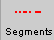
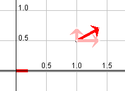
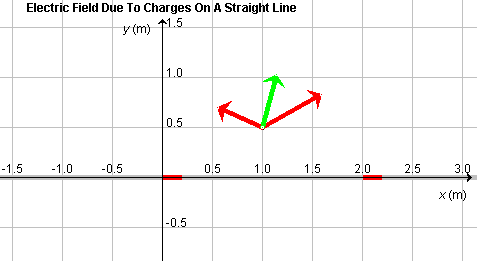
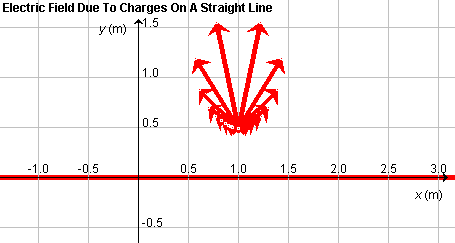

Instructions
This page is designed to get you started using the applet. The applet should be open. The step-by-step instructions on this page are to be done in the applet. You may need to toggle back and forth between instructions and applet if your screen space is limited.
 Superposition Of Fields Due To
Individual Point Charges
Superposition Of Fields Due To
Individual Point Charges
 Field Due To An Infinite Line
Charge
Field Due To An Infinite Line
Charge

Exercise 1. RESET  the applet.
the applet.
Select the Segments button  and the Grid button  . Click on the wire at a point
immediately to the right of the origin to select the first wire
segment to the right of the origin.
. Click on the wire at a point
immediately to the right of the origin to select the first wire
segment to the right of the origin.
Deselect the Resultant button  , and select the Vectors button
, and select the Vectors button
 instead.
instead.
Make sure the field point is still at (x,y) = (1.0, 0.5) m. Adjust the scale slider to a setting around 500. You should see the configuration shown in Figure 1 below, with a red arrow representing the electric field vector at the given field point. In calculating this electric field vector, the applet assumes that all of the charge on the selected segment is concentrated at the midpoint of the segment.

Figure 1
Exercise 2. Continuing from Exercise 1, select the
Data button  . Drag
the Data box so that all of it can be seen, as in Figure 2
below.
. Drag
the Data box so that all of it can be seen, as in Figure 2
below.

Figure 2
Note the coordinates of the field point P, the total electric
field vector at P, and particulars of the wire segment
selected. The present segment, immediately to the right of the
origin, has the label i = 0. The center of the segment is
at Xi = 0.10 m, and the electric field at P
due to this segment has the components
(Ex,Ey) = (7.41,
4.12)×109 V/m. The total electric field vector
 at P, due to all
selected segments, is displayed at the bottom of the Data
box. It has the same value as the field vector due to Segment 0
in this case, because only this one segment is selected.
at P, due to all
selected segments, is displayed at the bottom of the Data
box. It has the same value as the field vector due to Segment 0
in this case, because only this one segment is selected.
Note the listing of the segment width s in the third line of the Data box. Each segment is 0.20 m wide, and Segment 0 extends from x = 0 to x = 0.20 m, which implies its center is at Xi = 0.10 m.
Exercise 3. Continuing from Exercise 2, without making any other changes in the applet's settings, vary the line charge density l by means of the slider. As l increases, the length of the red arrow representing the field vector at P should increase. Also choose some negative values for l. The colors of the selected segment and of the arrow representing the field vector at P should change from red to blue and the arrow should reverse direction.
Exercise 4. Continuing from Exercise 3, click on the field point and drag it along a horizontal line parallel to the x-axis at y = 0.5 m. Observe changes in the field vector, as represented by the red or blue arrow and as shown in the Data box. The field vector should always be pointing away from or towards the selected segment, depending on whether the charge on the segment is positive or negative, and it should be largest in magnitude when the field point is closest to the center of the segment, i.e., when the x-coordinate of the point is equal to 0.10 m.
Exercise 5. Return the field point to
(x,y) = (1.0, 0.5) m and set the charge density to
the value l = 5.00 C/m. Select the
Vector Components button  . You should see the image
shown in Figure 3 below.
. You should see the image
shown in Figure 3 below.

Figure 3
The x and y components of the electric field vector at the given field point are shown in pale red. Their numerical values are available in the Data box and were listed in Exercise 2 above.

Exercise 1. RESET the applet.
Select the Segments button and the Grid button . Select two Segments,
Segment 0 immediately to the right of the origin and Segment
10 immediately to the right of x = 2.00 m.
Keep the Resultant button selected, and in addition select the
Vectors button .
Make sure the field point is still at (x,y) = (1.0, 0.5) m. Adjust the scale slider to a setting around 800. You should see the configuration shown in Figure 4 below. The two red arrows represent the electric field vectors at the given field point due to the two selected segments. The green arrow represents the resultant field vector, i.e., the sum (superposition) of the field vectors due to the two selected segments.

Figure 4
Drag the field point and change the line charge density, and record in your Notebook the changes in the three vectors that you observe. Is the green resultant vector always a diagonal in the parallelogram spanned by the two red vectors?
Exercise 2. Get the numerical values of the two field
vectors due to Segments 0 and 10 from the Data box. Do they
add up to the total electric field vector listed at the bottom of the Data box?
Exercise 3. Hide the green resultant, and select the
Vector Components button instead. Move the mouse
pointer first onto one and then onto the other selected
segment. The applet will display the components of the
electric field vector due to the segment to which the mouse
points in pale red.
Hide the red segment vectors and their components. Instead
display the resultant and its components by selecting the
Resultant button and the Resultant Components button  .
The applet will display the resultant in green and its
x and y components in pale green.
.
The applet will display the resultant in green and its
x and y components in pale green.
Drag the field point and change the line charge density, and observe the changes in the resultant and its components.
Exercise 1. RESET the applet. The Segments button should not be
selected, which means the applet assumes that the entire
infinite wire, extending beyond the applet window on either
side, is uniformly charged. The green arrow representing the
resultant at the given field point should be displayed.
Display the Grid.
Display the Data box, and record the value of the total electric field due to the infinite line displayed there. Then select the Segments button , and select all segments available in the window by clicking on the left-most segment and dragging with the mouse from the left to the right over all segments. The entire wire should be highlighted in red. Record the value of the total electric field now shown in the Data box. It should be close to, but not exactly equal to that for the infinite wire because when the Segments button is selected only the charge on the segments within the applet window, not the entire infinite line charge, contribute to the electric field.
Move the field point horizontally (parallel to the x-axis) while the Segments button is selected, and observe how the resultant field vector changes direction. Then deselect the Segments button, and observe how the resultant field vector stays vertical no matter where the field point is located.
Exercise 2. Continuing from Exercise 1, keep the Segments button and all wire segments selected, hide the green resultant vector, but display the red segment vectors. Set the scale slider to a setting around 300. Hide the Data box. If you place the field point at (x,y) = (1.0, 0.5) m, you should see a display similar to that in Figure 5 below.

Figure 5
Move the field point around the window, and observe the fireworks as the field vectors due to the individual segments are changing.